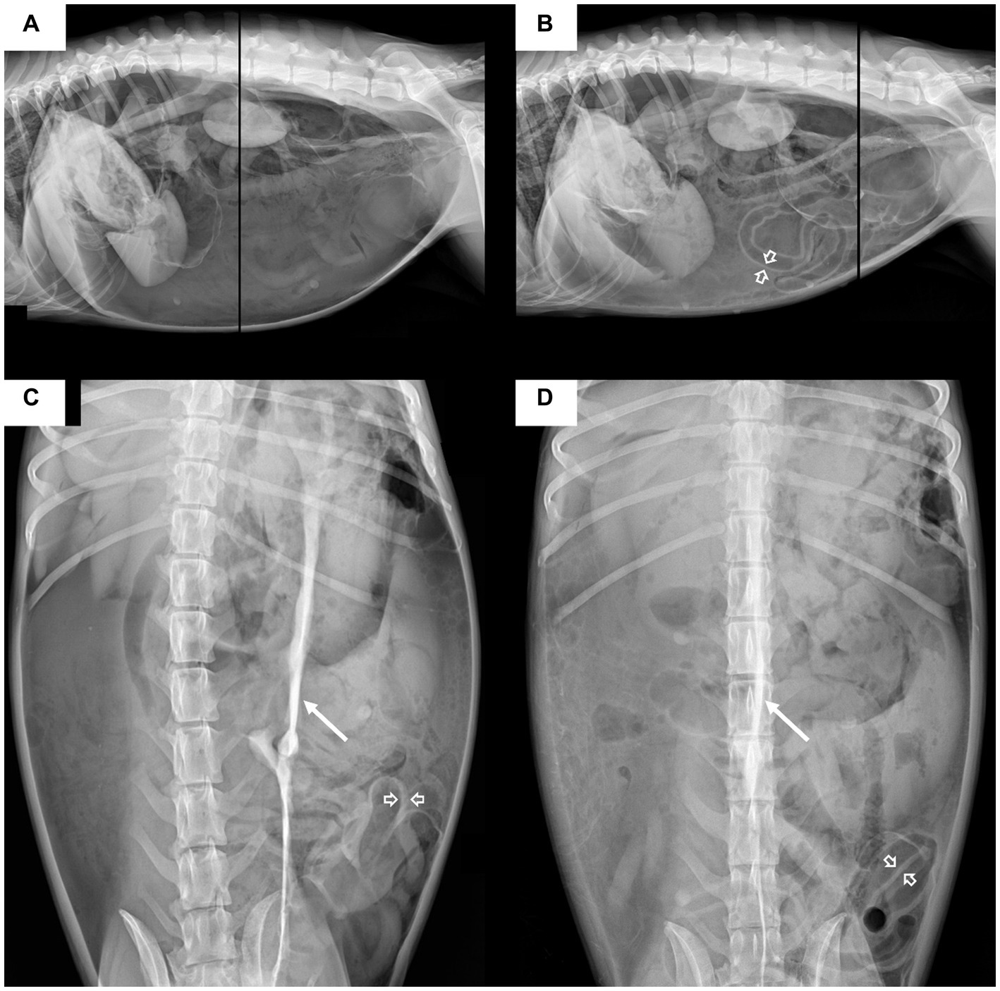

今日病例 · 根据阶段、覆盖缺口与错误标签自动选择
今日病例来自“已审核训练池”。公开文献的新记录仅进入待审核队列，不会直接推送。
VET CLINICAL OS · FORMAL V1
病例库驱动的个性化训练，不把未核验文献直接当作临床答案。
今日病例 · 根据阶段、覆盖缺口与错误标签自动选择
选中病例
安全与训练边界
公开文献增量更新队列
来源是 PubMed E-utilities 的元数据查询。每条记录都必须人工确认物种、临床价值、证据、地区适用性和教学结构后，才能进入训练池。
审核规则
| 发表信息 | 摘要/临床意义待审核 | 状态 |
|---|
24 周阶段化路径
| 阶段 | 训练重点 | 准入条件 |
|---|---|---|
| 第 1 周 | 基线测评、标准病历、健康体检 | 完成基线建档 |
| 第 2–6 周 | 预防医疗、轻度消化、皮肤耳科；结构化首诊 | 接诊框架评分 ≥ 70 |
| 第 7–12 周 | 消化、泌尿、呼吸、眼科的鉴别与检查选择 | 检查选择与理由评分 ≥ 70 |
| 第 13–17 周 | 急症红旗征、留观、转诊与升级 | 红旗征识别准确率 ≥ 90% |
| 第 18–21 周 | 老年、慢病、多问题患者与随访 | 可完成问题排序与随访计划 |
| 第 22–24 周 | 混合与信息不全病例、门诊节奏模拟 | 综合考核 ≥ 80，且无关键安全遗漏 |
1 例训练 + 1 张关联知识卡 + 1 次复盘。
5 例训练、错题回放、一次陌生病例微测验。
阶段考核、能力画像更新、病例推送权重重排。
本机学习记录
开始今日接诊后，训练记录会保存在此浏览器。
下一例选择逻辑
病例库治理规则
| 来源层 | 指南、同行评议公开病例、个人脱敏真实病例；每一条保留来源和更新时间。 |
|---|---|
| 版权边界 | 公开文献仅存储题录、链接和必要的学习摘要；不复制受版权保护的全文。 |
| 审核状态 | pending_review 不能推送；approved 才进入训练池；retired 用于失效或不适用内容。 |
| 临床边界 | 训练案例不替代本地法规、医院制度、药品说明书或带教兽医判断。 |
| 更新机制 | 执行刷新脚本获得新增公开文献元数据；审核后再结构化入库；随后重建数据文件并刷新页面。 |
交互式接诊训练
真实影像实操 · VET-IMG-001
真实病例背景：厌食、精神沉郁 20 天；就诊时腹部明显膨隆、体温 40.7°C、心率 132 次/分、呼吸困难伴喘气。

DR 实操任务：按“片位与质量 → 腹腔整体 → 脏器边界 → 气体分布 → 优先问题”写出影像所见，并决定是否需要立即升级处置。
超声实操：当前状态
当前工作台没有真实超声影像案例，也没有“探头位置—扫查切面—动态观察—判读—与 DR/化验整合”的实操训练。